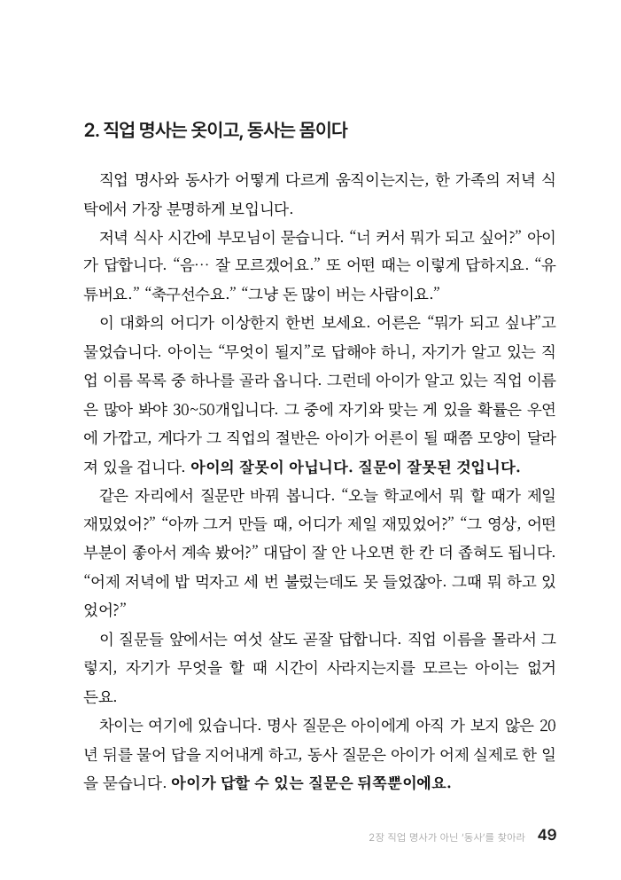
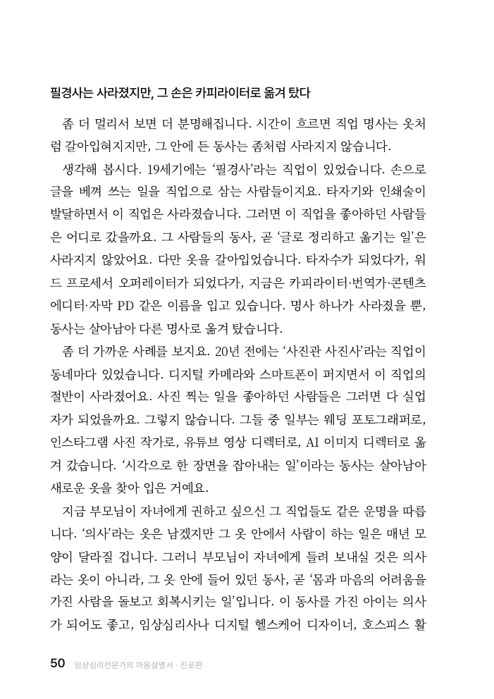

점수의 시간은 짧고,흥미의 시간은 깁니다.
《AI 시대, 진로 방향 찾기》 본문 35쪽
신간
임상심리전문가의 마음설명서: 진로편
안계훈 지음 2026년 9월 출간 예정
흥미와 성향, 성격을 함께 읽으며 AI 시대의 진로 방향을 살펴봅니다.


무엇이 되고 싶은지보다 무엇을 할 때 즐거운지 물어봅니다.
본문 49쪽
좋아하는 것이 없다는 말 앞에서, 경험의 역할을 살펴봅니다.
본문 102-103쪽